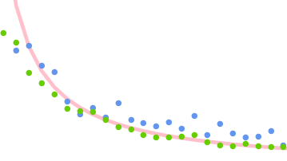

Human noise at the fingertip
Or, the secret life of your fingertip: What is it
actually
up to, after you explicitly told it
not
to go anywhere?

Find out in my paper
Human noise at the fingertip: Positional (non)control under varying haptic × musical conditions
.